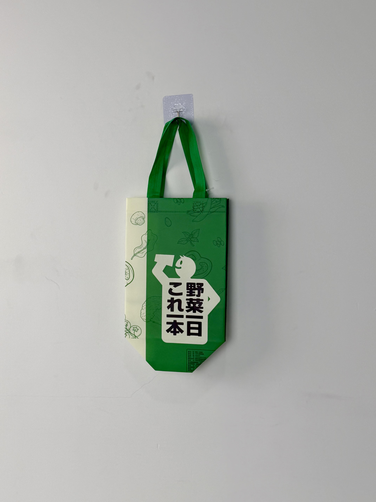

A charming green-and-cream thermal carrier for Yasai Japan, featuring playful vegetable illustrations and bold Japanese typography that brings farm-fresh personality to every delivery.

Yasai Japan (野菜日本) is a Japanese-inspired beverage and food brand operating in the Chinese market, specializing in vegetable-based drinks, fresh-pressed juices, and health-conscious meal options. The brand's name literally translates to "Vegetables Japan," and its entire identity revolves around farm-fresh ingredients, natural health, and the playful energy of Japanese kawaii culture. In a market where sweet milk tea dominates, Yasai Japan has carved out a unique niche targeting health-conscious consumers who want nutrition without sacrificing taste.
Our customers don't just want a drink — they want to feel good about what they're drinking. The bag needs to communicate freshness and fun in equal measure.
The thermal bag was developed for Yasai Japan's delivery operations, ensuring that cold-pressed juices and vegetable smoothies maintain their nutritional integrity and refreshing temperature during transport to health-focused consumers.
The design language merges Japanese food-packaging aesthetics with playful character design. The split green-and-cream field creates visual energy, while the vegetable line-art illustrations on the cream side communicate ingredient transparency. The bold Japanese typography "野菜日 これ一本" (One bottle of daily vegetables) functions as both brand statement and health promise. A small cartoon character peeks from behind the text, adding kawaii personality.
Dynamic color division creates visual energy while separating ingredient art from brand messaging.
Hand-drawn mushrooms, leaves, and vegetables communicate natural ingredients and farm freshness.
"野菜日 これ一本" delivers the brand promise with typographic confidence and cultural authenticity.
Small cartoon figure peeking from behind text adds playful personality and Japanese pop-culture appeal.
Fresh vegetable juices and smoothies require strict cold-chain maintenance to preserve nutrients and prevent separation. The bag specification prioritizes rapid cold retention and condensation control for health-conscious consumers who expect premium quality.
| Parameter | Specification | Test Standard |
|---|---|---|
| Cold Retention | < 8°C for 45 min (30°C ambient) | Internal Protocol |
| Load Capacity | 3 kg | ASTM D5265 |
| Condensation Control | Zero external moisture | Internal Protocol |
| Seam Strength | > 20 N/cm | ASTM D1683 |
The multi-field design required precise color registration at the green-cream boundary. The five-stage workflow ensured vegetable illustration clarity and thermal performance for nutrient-sensitive beverages.
100gsm non-woven PP with green and cream masterbatch sections. Color boundary aligned during extrusion for seamless split.
Green plastisol line art for mushrooms and leaves on cream field. 120 mesh screen for fine botanical detail.
Black plastisol for Japanese text and character. White plastisol for highlight details. Registration within ±0.5mm.
15-micron matte BOPP preserving natural surface quality and preventing juice condensation external transfer.
3mm EPE foam and aluminum-PE barrier laminated. Ultrasonic die-cutting. Green handles attached. Illustration clarity inspection.
The thermal bag was deployed across Yasai Japan's store network in tier-1 cities, targeting health-conscious young professionals and fitness enthusiasts. Rollout timing aligned with the brand's summer cold-pressed juice campaign and New Year detox program.
Key Insight: Health-focused customers specifically mentioned the vegetable illustrations as a trust signal. Seeing hand-drawn mushrooms and leaves on the bag reinforced their perception that the product contained real, natural ingredients rather than artificial flavors — a critical concern in the health-beverage category.
The Japanese kawaii character proved particularly effective with female consumers aged 18-28, who described the bag as "cute enough to reuse for shopping." This demographic showed the highest reuse rate, extending brand exposure far beyond the initial juice purchase.
Three design decisions differentiate this health-beverage bag from sweet-tea competitors. Each leverages transparency and cultural coding to build trust with health-conscious consumers.
In a market where "vegetable juice" claims are often met with skepticism, the hand-drawn vegetable art provides visual evidence of authentic ingredients. The mushrooms, leaves, and greens aren't decorative — they're a manifesto of what's actually inside the bottle.
Chinese consumers widely associate Japanese food products with quality, safety, and attention to detail. The Japanese typography and kawaii character leverage these positive associations, positioning Yasai Japan as a premium import-quality brand even when produced domestically.
The dominant green field is psychologically associated with nature, health, and freshness — exactly the attributes that vegetable-juice consumers seek. Unlike competitors who use bright primary colors suggesting artificiality, Yasai Japan's green palette signals authenticity and wholesomeness.
We design thermal delivery bags for health and wellness beverage brands. From ingredient-forward illustration to nutrient-preserving cold-chain engineering, we create packaging that communicates your health promise.